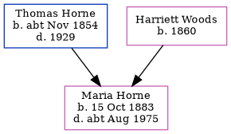

Maria Annie Horne 1883 - c1975
[ Home ] | [ Calendar ] | [ Surnames Index ] | [ Family History ]The daughter of Thomas Horne (a brewer's drayman) and Harriett Woods, Maria Horne, the first cousin twice-removed on the father's side of Nigel Horne, was born in Pancras, London, England on Oct 15, 18831,2.
She died c. Aug 1975 in Hampstead, London, England2.
Parents
- Thomas Warner was born c. Nov 1854
- Harriett was born in 1860
Citations
- England & Wales births 1837-2006 - Findmypast
- England & Wales deaths 1837-2007 - Findmypast
Media
England & Wales Births 1837-2006 - BMD-B-1883-4-AZ-000272-235
England & Wales Deaths 1837-2007 - BMD-D-1975-3-AZ-000479-044
Family Tree
Generated by Ged2Site. Last updated on Jul 20, 2025